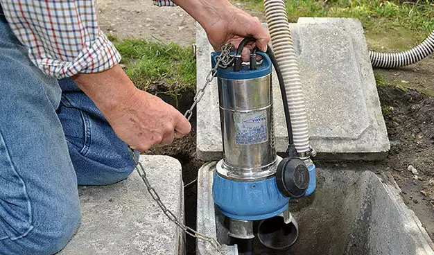

Débouchage canalisations Champigny-sur-Marne : Faites appel à nos spécialistes pour un débouchage rapide et efficace de vos canalisations à Champigny-sur-Marne. Grâce à notre savoir-faire et à des équipements performants, nous éliminons tout type d'engorgement.

Vidange Fosse Septique Champigny-sur-Marne - Debouchage canalisations Champigny-sur-Marne
DEVIS GRATUITAssainissement à Champigny-sur-Marne

Nettoyage canalisations Champigny-sur-Marne : Assurez la longévité de vos canalisations avec notre service de curage professionnel à Champigny-sur-Marne. Une intervention régulière prévient l’accumulation des résidus et optimise votre réseau d'assainissement.

Inspection caméra Champigny-sur-Marne : Identifiez rapidement les anomalies de vos canalisations avec notre service d'inspection par caméra à Champigny-sur-Marne. Une solution efficace pour détecter fissures, bouchons et obstructions.
Vidange Champigny-sur-Marne : Évitez les désagréments liés à une fosse septique pleine grâce à notre service de vidange à Champigny-sur-Marne. Nous assurons un entretien régulier et efficace pour un fonctionnement optimal de vos installations.


Pompe de relevage Champigny-sur-Marne : Profitez d’un système d’évacuation performant avec notre installation de pompes de relevage à Champigny-sur-Marne. Une solution idéale pour améliorer l’évacuation des eaux usées, même en cas de dénivelé.
Urgence Champigny-sur-Marne : Une urgence en assainissement ? Nos experts interviennent rapidement à Champigny-sur-Marne. Que ce soit pour un débouchage, une inspection caméra ou une vidange, nous assurons une prise en charge efficace.

NOS TARIFS
ATTRACTIFS
Nous vous offrons des services d'assainissement de qualité à des prix attractifs. Notre engagement est de vous fournir des solutions efficaces sans compromettre votre budget. Contactez-nous dès maintenant pour découvrir nos tarifs avantageux et bénéficier d'un service fiable et professionnel.
Prix vidange fosse septique.
Prix assainissement individuel.
Prix debouchage canalisation.
Prix debouchage wc.
Prix inspection camera canalisation.
Prix hydrocurage.
Prix pompe de relevage.
NOS VALEURS
QUALITÉ
SYNONYME DE PASSION
La règle d’or de l’entreprise est de rendre à la clientèle un travail de qualité. Le respect du savoir faire et l’écoute permettent à eux seuls d’avoir une satisfaction client, et un résultat pérenne.
PASSION
SYNONYME DE PLAISIR
La passion du travail, passe par le plaisir. Une réalisation réussie est la clé d’un client satisfait. Chaque projet est unique et demande une personnalisation qui commence par l’écoute et le conseil.
ENGAGEMENT
SYNONYME DE RESPECT
L’engagement mutuel est une forme de respect. Le respect des lieux et de vous même garantissent un travail dans les meilleurs délais. Tout cela afin que vous puissiez vous sentir heureux dans vos locaux le plus rapidement possible.
CONFIANCE
SYNONYME DE SECURITÉ
La confiance dans une entreprise est le socle de la réussite. L’écoute des besoins de chacun ainsi que le conseil permet de créer un climat de confiance. Le résultat de cette confiance réciproque donnera une valeur ajoutée à vos intérieurs.